By Patrick Cozzi, who works on the Cesium WebGL engine.
With the new shader editor in Firefox 27 (available now in Aurora), WebGL tools are taking a big step in the right direction. This article reviews the current state of WebGL debugging and profiling tools with a focus on their use for real engines, not simple demos. In particular, our engine creates shaders dynamically; uses WebGL extensions like Vertex Array Objects; dynamically creates, updates, and deletes 100s of MB of vertex buffers and textures; renders to different framebuffers; and uses web workers. We're only interested in tools that provide useful results for our real-world needs.
The Firefox WebGL Shader Editor allows us to view all shader programs in a WebGL app, edit them in real-time, and mouse over them to see what parts of the scene were drawn using them.
What I like most about it is it actually works. Scenes in our engine usually have 10-50 procedurally-generated shaders that can be up to ~1,000 lines. The shader editor handles this smoothly and automatically updates when new shaders are created.
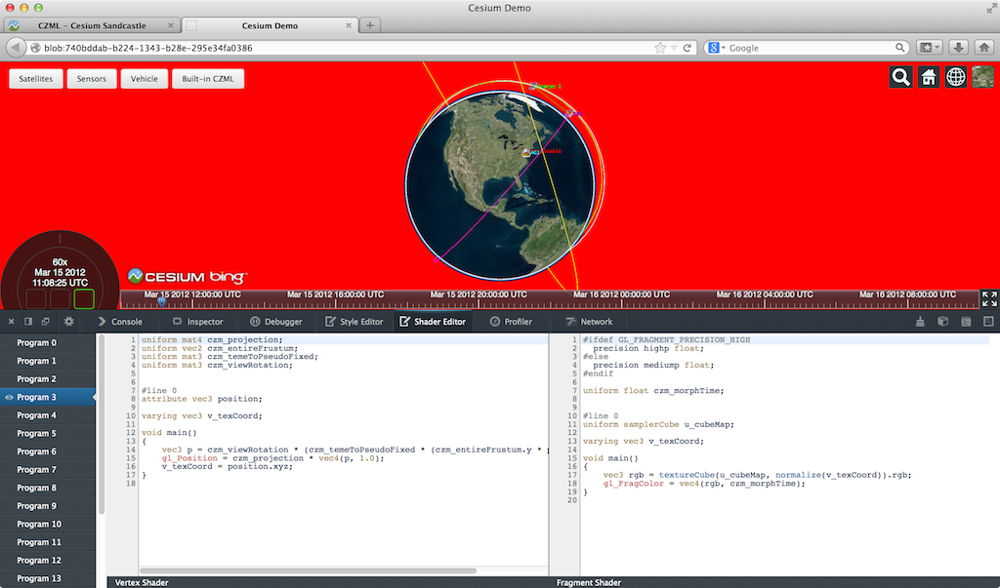
The skybox shader is shown in the editor and the geometry is highlighted in red.
I was very impressed to see the shader editor also work on the Epic Citadel demo, which has 249 shaders, some of which are ~2,000 lines.
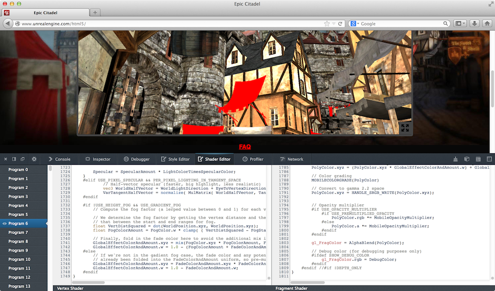
Live editing is, of course, limited. For example, we can't add new uniforms and attributes and provide data for them; however, we can add new varying variables to pass data between vertex and fragment shaders.
Given that the editor needs to recompile after our edits, attribute and uniform locations could change, e.g., if uniforms are optimized out, which would break most apps (unless the app is querying these every frame, which is a terrible performance idea). However, the editor seems to handle remapping under-the-hood since removing uniforms doesn't break other uniforms.
Recompiling after typing stops works well even for our large shaders, but every editor I see like this, including JavaScript ones we've built, tend to remove this feature, in favor of an explicit run, as the lag can be painful.
There are some bugs like mousing over some shaders causes artifacts or parts of the scene to go away, which makes editing those shaders impossible. 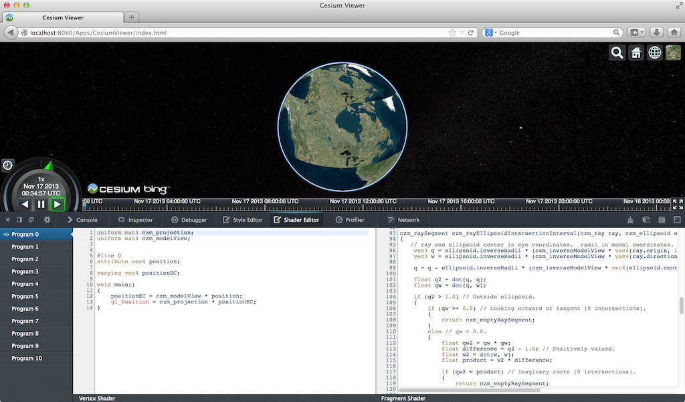
Even though this is in a pre-beta version of Firefox, I find it plenty usable. Other than spot testing, I use Chrome for development, but this tool really makes me want to use Firefox, at least for shader debugging.
We planned to write a tool like this for our engine, but I'm glad the Mozilla folks did it instead since it benefits the entire WebGL community. An engine-specific tool will still be useful for some. For example, this editor uses the shader source provided to WebGL. If a shader is procedurally-generated, an engine-specific editor can present the individual snippets, nodes in a shade tree, etc.
A few features that would make this editor even better include
For a full tutorial, see Live editing WebGL shaders with Firefox Developer Tools.
The WebGL Inspector was perhaps the first WebGL debugging tool. It hasn't been updated in a long time, but it is still useful.
WebGL Inspector can capture a frame and step through it, building the scene one draw call at a time; view textures, buffers, state, and shaders; etc.
The trace shows all the WebGL calls for a frame and nicely links to more info for function arguments that are WebGL objects. We can see the contents and filter state of textures, contents of vertex buffers, and shader source and current uniforms.
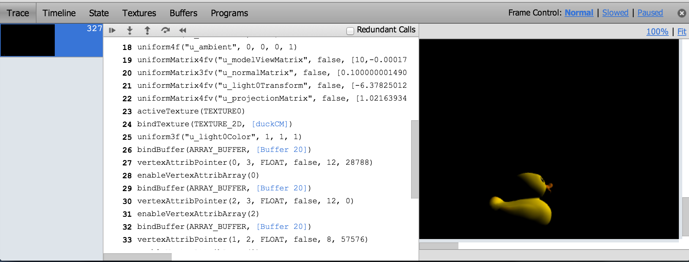
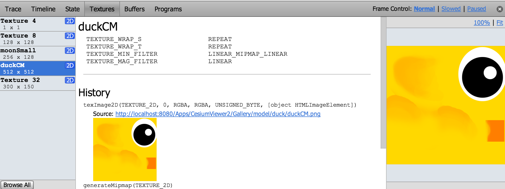
One of WebGL Inspector's most useful features is highlighting redundant WebGL calls, which I use often when doing analysis before optimizing.
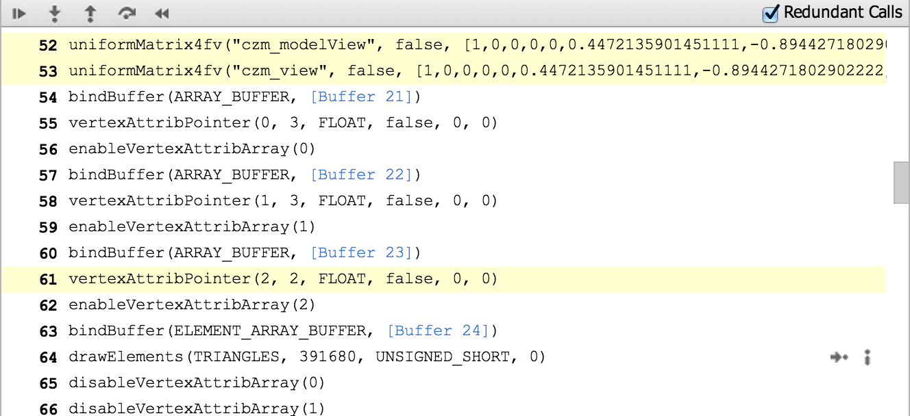
Like most engines, setting uniforms is a common bottleneck for us and we are guilty of setting some redundant uniforms for now.
WebGL Inspector may take some patience to get good results. For our engine, the scene either isn't visible or is pushed to the bottom left. Also, given its age, it doesn't know about extensions like Vertex Array Objects so when we run our engine with WebGL Inspector, we don't get the full set of extensions supported by the browser.
The WebGL Inspector page has a full walkthrough of its features.
The Canvas Inspector in Chrome DevTools is like a trimmed-down WebGL Inspector built right into Chrome. It is an experimental feature but available in Chrome stable (Chrome 31). In chrome://flags/, "Enable Developer Tools experiments" needs to be checked and then the inspector needs to be explicitly enabled in the DevTools settings.
Although it doesn't have nearly as many features as WebGL Inspector, Canvas Inspector is integrated into the browser and trivial to use once enabled.
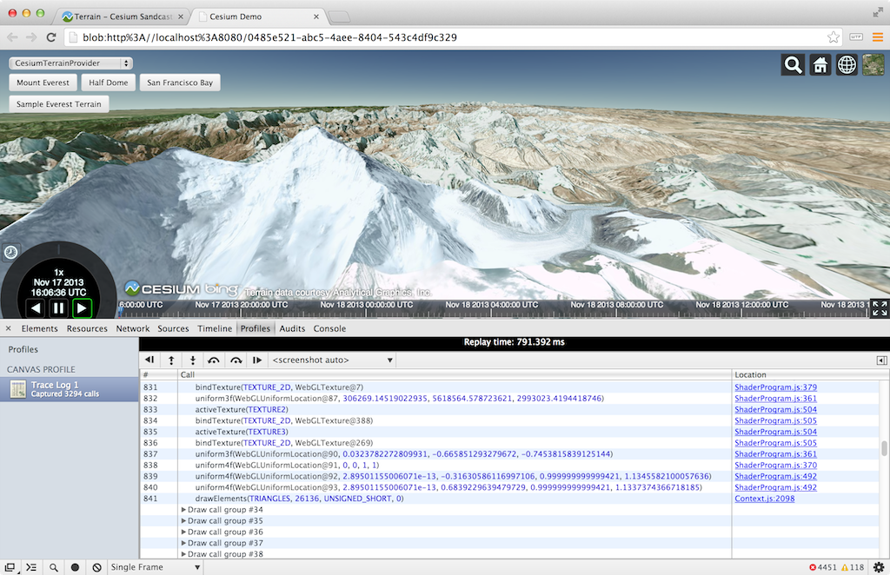
Draw calls are organized into groups that contain the WebGL state calls and the affected draw call. We can step one draw group or one WebGL call at a time (all WebGL tracing tools can do this). The scene is supposed to be shown one draw call at a time, but we currently need to turn off Vertex Array Objects for it to work with our engine. Canvas Inspector can also capture consecutive frames pretty well.
The inspector is nicely integrated into the DevTools so, for example, there are links from a WebGL call to the line in the JavaScript file that invoked it. We can also view the state of resources like textures and buffers, but not their contents or history.
Tools like WebGL Inspector and Canvas Inspector are also useful for code reviews. When we add a new rendering feature, I like to profile and step through the code as part of the review, not just read it. We have found culling bugs when stepping through draw calls and then asking why there are so many that aren't contributing to any pixels.
For a full Canvas Inspector tutorial, see Canvas Inspection using Chrome DevTools.
The Google Web Tracing Framework (WTF) is a full tracing framework, including support for WebGL similar to WebGL Inspector and Canvas Inspector. It is under active development on github; they addressed an issue I submitted in less than a day! Even without manually instrumenting our code, we can get useful and reliable results.
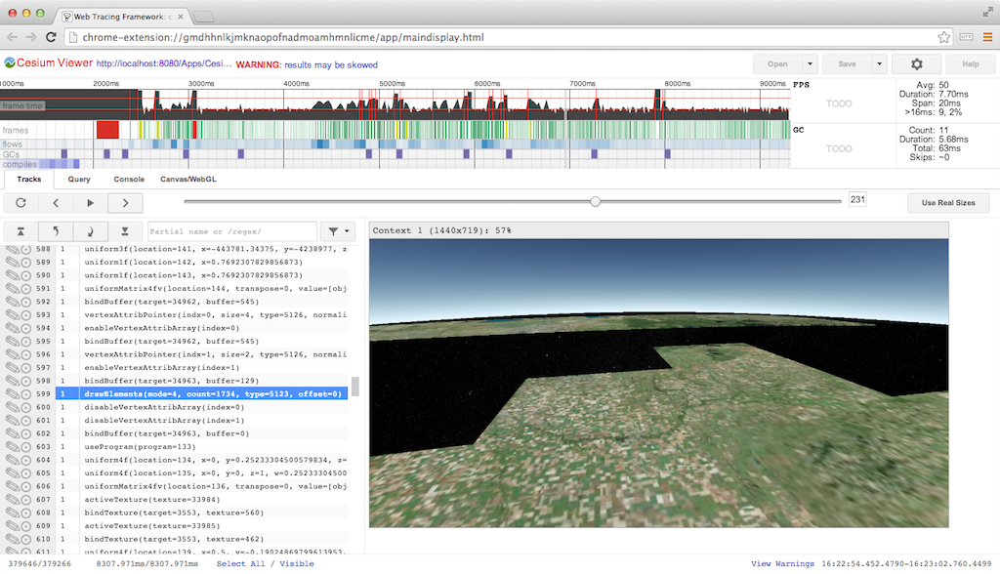
Stepping through a frame one draw call at a time.
For WebGL, WTF has similar trace capability to the above inspectors, combined with all its general JavaScript tracing features. The WebGL trace integrates nicely with the tracks view.
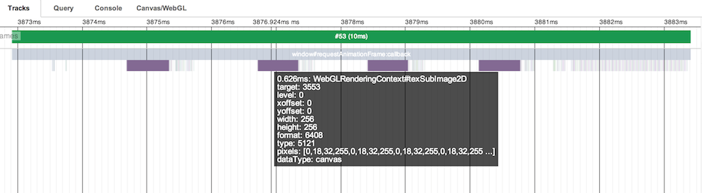
Above, we see the tracks for frame #53. The four purple blocks are texture uploads using texSubImage2D to load new imagery tiles we received from a web worker. Each is call is followed by several WebGL state calls and a drawElements call to reproject the tile on the GPU (see World-Scale Terrain Rendering from the Rendering Massive Virtual Worlds SIGGRAPH 2013 course). The right side of the frame shows all the state and draw calls for the actual scene.
Depending on how many frames behind the GPU is, a better practice would be to do all the texSubImage2D calls, followed by all the reprojection draw calls, or even move the reprojection draw calls to the end of the frame with the scene draw calls. The idea being to ensure that the texture upload is complete by the time the reprojection draw call is executed. This trades the latency of completing any one for the throughput of computing many. I have not tried it in this case so I can't say for certain if the driver lagging behind isn't already enough time to cover the upload.
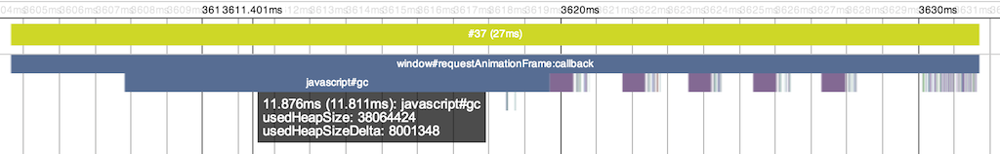
The tracks view gets really interesting when we examine slow frames highlighted in yellow. Above, the frame takes 27ms! It looks similar to the previous frame with four texture uploads followed by drawing the scene, but it's easy to see the garbage collector kicked in taking up almost 12ms.
Above is our first frame, which takes an astounding 237ms because it compiles several shaders. The calls to compileShader are very fast because they don't block, but the immediate call to linkProgram needs to block, taking ~7ms for the one shown above. A call to getShaderParameter or getShaderInfoLog would also need to block to compile the shader. It is a best practice to wait as long as possible to use a shader object after calling compileShader to take advantage of asynchronous driver implementations. However, testing on my MacBook Pro with an NVIDIA GeForce 650M did not show this. Putting a long delay before linkProgram did not decrease its latency.
For more details, see the WTF Getting Started page. You may want to clear a few hours.
The WebGL Report is handy for seeing a system's WebGL capabilities, including extensions, organized by pipeline stage. It's not quite up-to-date with all the system-dependent values for the most recent extensions but it is close. Remember, to access draft extensions, we need to explicitly enable them in the browser now.
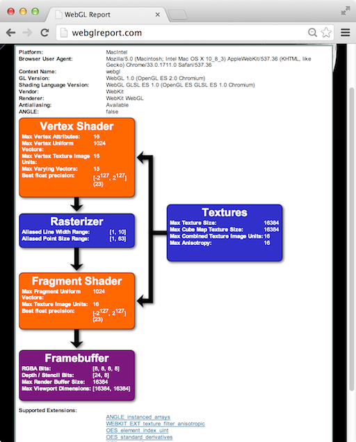
The simple Chrome Task Manager (in the Window menu) is useful for quick and dirty memory usage. Make sure to consider both your app's process and the GPU process.
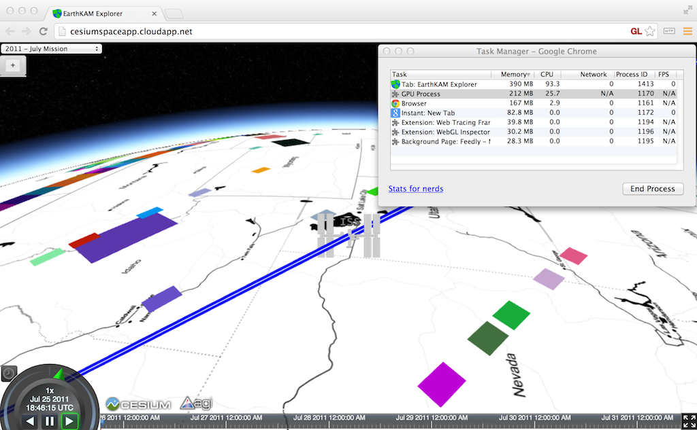
Although I have not used it, webgl-debug.js wraps WebGL calls to include calls to getError. This is OK for now, but we really need KHR_debug in WebGL to get the debugging API desktop OpenGL has had for a few years. See ARB_debug_output: A Helping Hand for Desperate Developers in OpenGL Insights.
There are also WebGL extensions that provide debugging info to privileged clients (run Chrome with --enable-privileged-webgl-extensions). WEBGL_debug_renderer_info provides VENDOR and RENDERER strings. WEBGL_debug_shaders provides a shader's source after it was translated to the host platform's native language. This is most useful on Windows where ANGLE converts GLSL to HLSL. Also see The ANGLE Project: Implementing OpenGL ES 2.0 on Direct3D in OpenGL Insights.
The features expected in WebGL 2.0, like multiple render targets and uniform buffers, will bring us closer to the feature-set OpenGL developers have enjoyed for years. However, API features alone are not enough; we need an ecosystem of tools to create an attractive platform.
Building WebGL tools, like the Firefox Shader Editor and Chrome Canvas Inspector, directly into the browser developer tools is the right direction. It makes the barrier to entry low especially for projects with limited time or developers. It helps more developers use the tools and encourages using them more often, for the same reason that unit tests that run in the blink of an eye are ran often.
The current segmentation of Google's tools may appear confusing but I think it shows the evolution. WebGL Inspector was first out of the gate and proved very useful so the next generation version is being built into Chrome Canvas Inspector for easy access and into the WTF for apps that need careful precise profiling. For me, WTF is the tool of choice.
We still lack a tool for setting breakpoints and watch variables in shaders. We don't have what NVIDIA Nsight is to CUDA, or what AMD CodeXL is to OpenCL. I doubt that browser vendors alone can build these tools. Instead, I'd like to see hardware vendors provide back-end support for a common front-end debugger built into the browser.